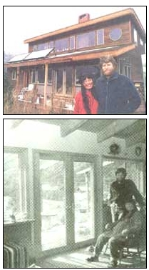
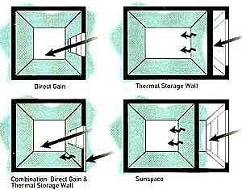

ENERGY TIPS
To many, the concepts of a solar home and an energy-efficient home have been mutually exclusive; any home with sufficient south-facing glass to heat the interior had too much glass to be sufficiently insulated. All too many home designers and builders still labor under that misconception. An energy-efficient home can and should always incorporate solar principles into its design. Likewise, a solar home must be energy efficient to be practical. Jeff and Priscilla Dickenson knew this when they designed their new home in Carbondale, CO, and were determined to find some answers.
Although Rocky Mountain winters are notoriously cold, their house remains a comfortable 55°-75°F year round, using very little backup heat and no air conditioning whatsoever. The sun heats their home and the energy-efficient design works to store and distribute the heat slowly and continuously.
In designing their home, Jeff and Priscilla relied heavily upon four major energy factors: collection, storage, distribution, and retention.
"We built the house in the fashion of an Amish barn raising," Jeff reported. "with over 30 friends helping throughout. It's a very gratifying way to build, and adds so much life to the project."
The sun enters the home through a large surface area of vertical, south-facing, high-performance, direct-gain windows. These dramatically out perform older window designs in that they are several times more efficient at reducing heat loss. Conventional window designs actually lose two to three times more energy at night than they manage to collect all day, making all that south-facing glass, however well intentioned, an energy liability in both summer and winter months. Better designed windows work to amplify the sun's energy and retain that heat indoors for extended periods.
Thermal mass absorbs and stores heat when the sun shines and releases that heat during evenings or cooler periods. Such mass is the critical component of any passive solar energy storage design. The importance of this factor, however, has been seriously overe stimated in the past. There is seldom need to fill all the south-facing walls with barrels of water, for instance, but this continues to be common practice in many areas. Dozens of barrels will require something just short of a nuclear explosion to heat. Too much mass, or mass in the wrong space is inefficient and expensive. Concrete, brick, adobe, stone, and drywall are all examples of material that can act as good thermal mass when applied appropriately.
The Dickensons use a four-inch concrete slab floor and eight-inch concrete block thermal storage walls to store the heat in their home. The second law of thermodynamics does the rest, forcing that energy to radiate from warmer objects to cooler during the frigid winter nights.
Our advice for distribution is keep it simple. Smart energy-efficient solar construction means that you will not need complicated and expensive heat transfer systems, such as double envelopes, rock boxes, or earth tube cooling to move air. Natural convection principles will move hot air upwards and into cooler spaces without being helped.
Passive solar strategies: Clockwise from top left: Direct gain, combination of direct gain and thermal storage material in wall, sunspace (small room or hallway), direct gain windows heating thermal storage wall exclusively.
The principles listed above will mean precious little if a home lacks the ability to retain absorbed and stored heat in its envelope (walls, floors, and ceilings). Everything from Styrofoam to strawbales has been used to enclose a building's exterior, and your choice will depend upon both personal preferences and climate conditions. Whatever the decision may be, be certain that your walls have an insulating factor of approximately R-30; your ceilings R-50. These figures exceed the requirements of most North American building codes, but are a tremendously important investment. Jeff and Priscilla built their home of stress-skin panels. This pre fabricated 4' x 8' panel building system is both draft-resist-ant and superinsulated. It is a factory-made sandwich of oriented stranboard (similar to plywood) and CFC (chlorofluorocarbon)-free Styrofoam. This envelope provides a wall R-factor of 24 and a ceiling factor of 44.
Air leakage was reduced throughout the home by sealing first the more obvious sites of air leakage such as door and window frames, but then was extended to sill plates, rim joists, pipes, wire ducts, and recessed lights. Expanding foam, caulk, weather- stripping gaskets, and drywall were all conscientiously used to prevent drafts.
Jeff and Priscilla's home was also designed to minimize its consumption of electricity as well as its production of waste. To that end it employs compact fluorescent lighting, low-flow plumbing fixtures, and is preplumbed for a grey water system to utilize household waste water for irrigation of landscape. Last, wherever possible, recycled building materials were used.
"People kept stopping by the house during construction," Priscilla added. "...saying how much sense a solar house makes, yet we look around and ours is the only one in the neighborhood. I always feel silly telling those people that we only burn a quarter cord of wood each year, but in fact, we don't even burn that much."
Johnny Weiss and Laurie Stone teach solar home design at Solar Energy International in Carbondale, CO.
COLLECTION
• Is there unobstructed southern exposure?
• Is the long face of the home oriented to within 15° of true south?
• Have you sized the south-facing window area to optimize your design?
• Are the windows property shaded to protect from overheating?
STORAGE
• Have you properly sized and located thermal mass?
• Is your thermal mass practical and low maintenance? DISTRIBUTION
• Does the plan encourage the natural distribution of warm and cool air year-round?
• Have you planned for controlled mechanical ventilation when it is required?
• Are nonliving spaces such as garages and closets, located in nonsolar areas? RETENTION
• Are you taking extra care to reduce random air leakage?
• Are you optimizing insulation?
• Are you using the most efficient windows you can afford?
• Are you using different window types for different applications (heat-rejecting glazing on west windows, high R-value glazing on north windows, etc.)?
ENERGY EFFICIENCY
• Does your design maximize the use of natural daylight?
• Have you downsized the mechanical heating and cooling systems as much as possible?
• Have you considered using a solar water heater?
• Are you using energy-efficient lights and appliances?
• Have you considered generating electricity with photovoltaic solar modules or a wind turbine?
|
 PHOTOS BY CHRISSY LEONARD ILLUSTRATIONS: LIZ NEWKIRK |
 |
|